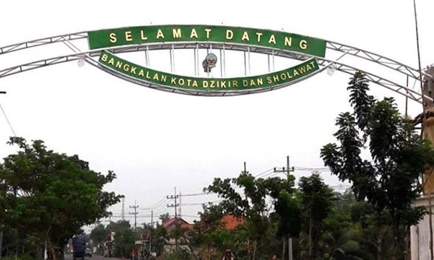
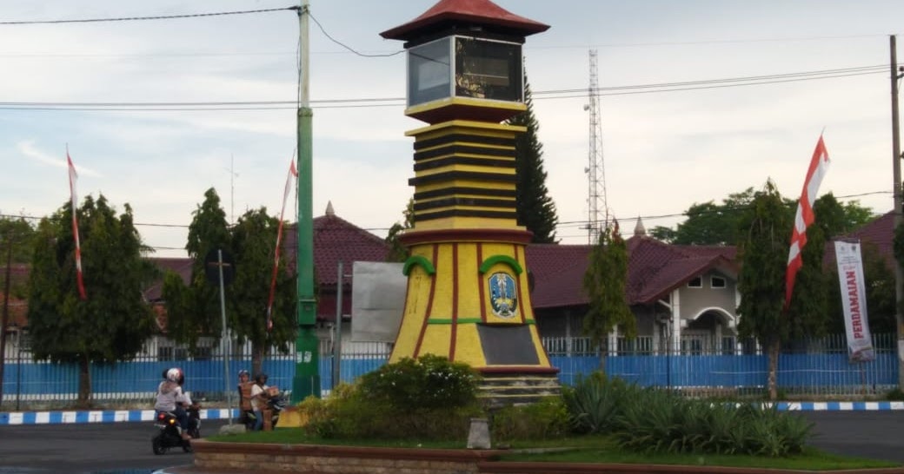
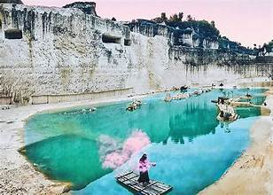
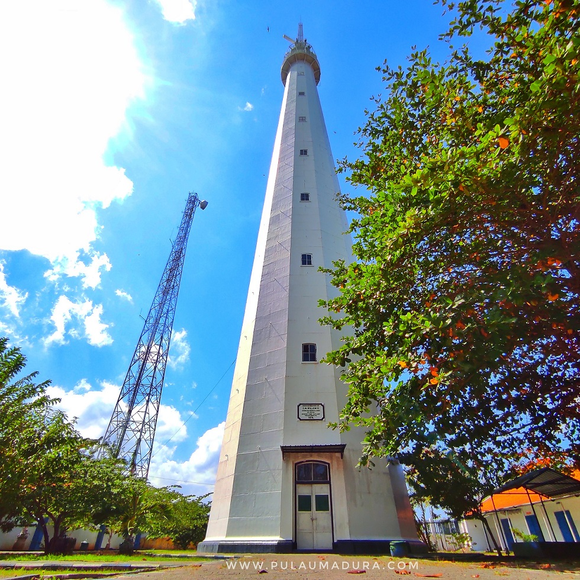
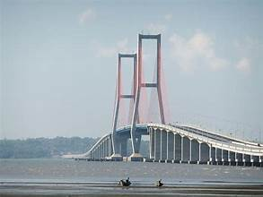
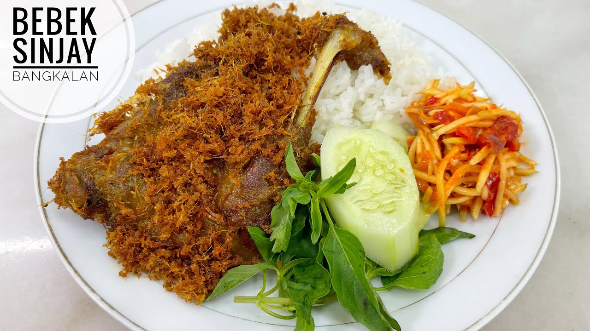
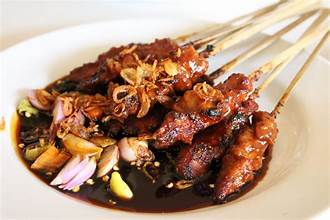
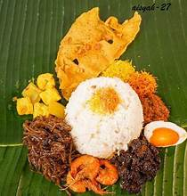

Bangkalan adalah sebuah kabupaten di ujung paling barat Pulau Madura, Provinsi Jawa Timur, yang dikenal sebagai gerbang utama masuk ke Madura.
Daerah ini dikenal dengan potensi wisata alam, budaya, serta kuliner khas yang menjadi daya tarik wisatawan.
Penduduk
Kecamatan
Desa/Kelurahan

Bukit kapur yang unik dan instagramable.

Mercusuar bersejarah dengan pemandangan laut.

Ikon penghubung Surabaya dan Madura.

Bebek goreng dengan sambal pencit khas.

Sate dengan bumbu kacang khas.

Nasi dengan lauk khas Madura.